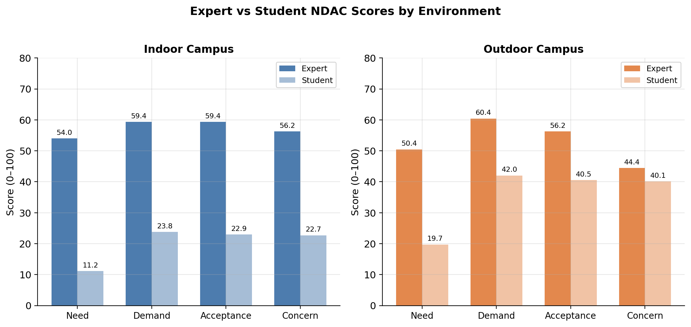
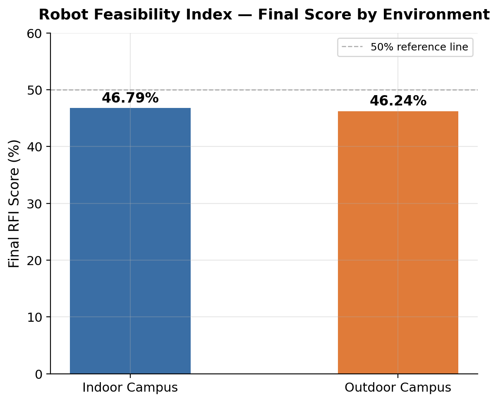
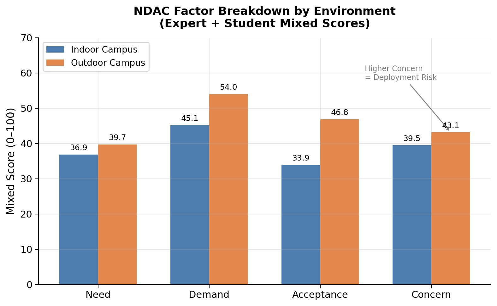
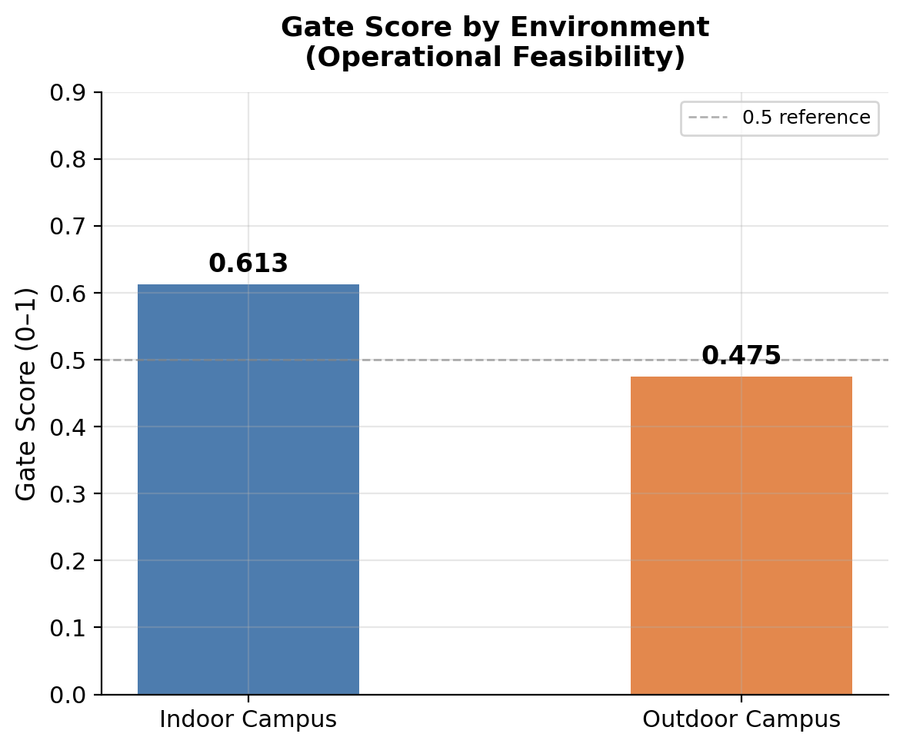

Autonomous Patrol Robot Systems Analysis
A systems engineering study for evaluating autonomous security robot deployment through stakeholder criteria, survey processing, and weighted scoring.
Overview
This project was a 2nd-place entry in the K-Capstone Challenge, organized by the Consulate General of the Republic of Korea in Seattle. Our five-person interdisciplinary team was assigned to evaluate the U.S. market-entry feasibility of DOGU Robotics, a Korean company developing indoor and outdoor autonomous patrol and service robots. The deliverable was a 10-minute final presentation and market-entry strategy recommendation.
Problem & Approach
The core challenge was turning broad stakeholder concerns into a quantified decision framework. Early work focused on market research and competitor benchmarking, but after feedback the direction shifted toward a structured feasibility index. The team developed a Robot Feasibility Index, or RFI, informed by UTAUT and SERVQUAL frameworks, organized around five factors: Need, Demand, Acceptance, Concern, and Gate. This allowed deployment environments to be scored and compared on a consistent basis.
Analysis Framework
The RFI evaluated three deployment scenarios: indoor campus, outdoor campus, and hospital environments. Data sources included 113 usable student survey responses collected via Google Forms and stakeholder interview inputs from approximately 20 people, including UWPD, UW facilities staff, healthcare workers, and administrators. Survey responses and interview inputs were mapped onto the five RFI factors and scored to produce a final feasibility percentage for each deployment scenario. Competitor benchmarking compared DOGU Robotics' IROI and Patrover against robots including Knightscope K5 and SMP Robotics Argus, covering patrol duration, weather resistance, sensor configuration, autonomous docking, and pricing models.

My Role
Within the five-person team, my specific contributions included:
- Helped shift the project from broad market research into a quantified feasibility-index approach.
- Proposed and developed the NDAC framework structure connecting Need, Demand, Acceptance, and Concern factors.
- Drafted the initial Python and pandas analysis workflow for survey preprocessing and weighted scoring.
- Connected UTAUT and SERVQUAL concepts to the RFI interpretation and factor definitions.
- Contributed to the final presentation covering RFI logic, factor definitions, and deployment scenario interpretation.
Note: A CSE teammate revised and finalized the analysis code. An IE teammate produced some graphs in R. Stakeholder interviews were conducted at the team level.
Evidence
Outcome
The RFI produced quantified feasibility scores across two campus deployment scenarios: indoor campus at 46.79% and outdoor campus at 46.24%, a difference of 0.55 percentage points. The similar scores suggest that campus indoor and outdoor deployment feasibility are comparable under the current data conditions. Student survey results showed strong baseline support for robot adoption: approximately 67% in support, 26% neutral, and 7% opposed. The most commonly reported concerns were overreliance at 63% and privacy invasion at 45%, which the team addressed through recommendations for event-based recording and on-device AI processing rather than continuous surveillance. On the demand side, outdoor campus respondents identified real-time detection and discovery at 67%, emergency communication at 65%, and nighttime escort or patrol support at 64% as the top three most valued functions. Indoor campus expert interviews emphasized facility condition monitoring, space utilization data collection, and after-hours security coverage as priority use cases. The final strategic recommendation reframed DOGU Robotics' robots from surveillance devices into integrated facility and operations support tools. Rather than positioning the robots as security replacements, the recommendation emphasized reducing repetitive non-clinical and facility workload, collecting operational data, and improving after-hours coverage — functions that support staff rather than replace them.



Limitations
This was a market-entry feasibility study, not a robotics hardware engineering project or a field deployment validation. Results depended on survey data quality, stakeholder interview scope, and framework assumptions. The RFI scoring reflects the study conditions and should not be interpreted as a definitive deployment recommendation. Expert interviews were conducted at the team level and not independently verified.
Next Step
Next steps include adding decision-matrix visuals, documenting assumptions, and connecting the scoring model to specific deployment scenarios.